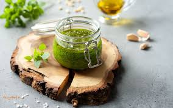
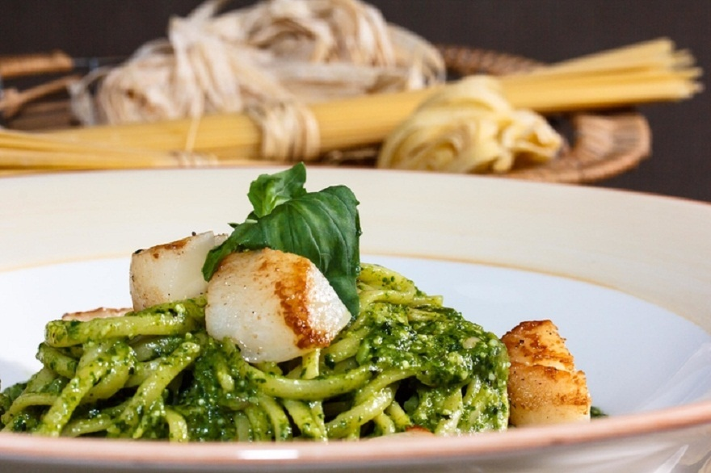
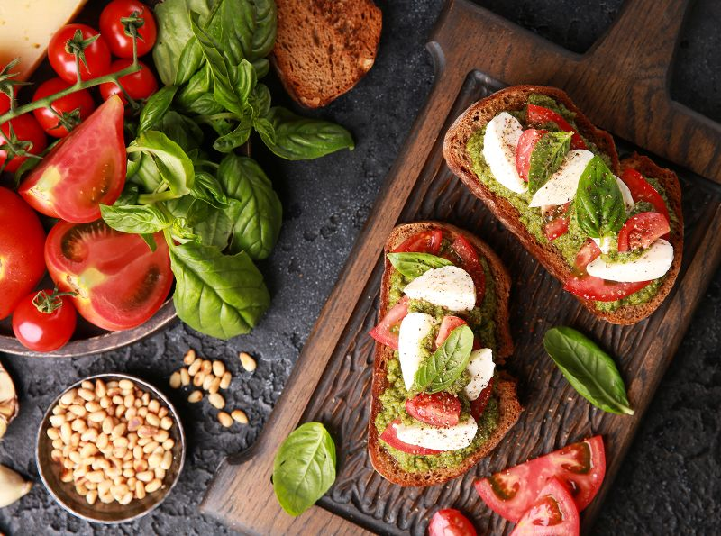

Соус Песто
Соус Песто происходит от итал. pesto, что в переводе означает толчёный, молотый. Этот соус итальянской кухни на основе базилика, семян пинии, сыра пармезан и оливкового масла. Соус прекрасно подходит к пасте или к другим блюдам — курице, картошке, сэндвичам и овощам, в качестве акцента.
Американский психолог и психиатр Эрик Берн говорил:
Пусть макароны имеют один вкус, но сорта различаются соусом!



Ингридиенты:
- базилик - 50г
- кедровые орешки - 40г
- чеснок - 3 зубчика
- сыр Пармезан - 50г
- оливковое масло - 90мл
- соль по вкусу
Приготовление:
- Вымыть листья базилика и дать им хорошо обсохнуть.
- Положить его в блендер, добавить 1 зубчик чеснока (предварительно почищенный и разрезанный пополам) и кедровые орехи, добавить немного соли и влить оливковое масло.
- Измельчить до состояния пюре.